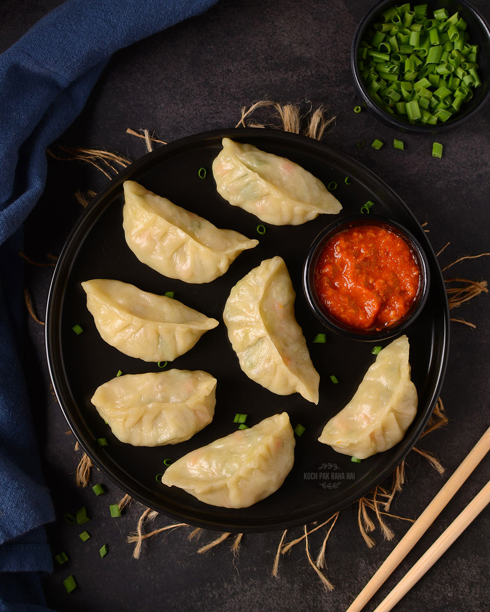

Delicious Recipes
Home
Pasta
Burger
Pizza
Cake
Momos
Momos

Preparation Time:
400 mins
Difficulty:
Moderate
Ingredients
Flour
Table salt and water
Ground meat or finely chopped veg
Onion and ginger-garlic paste
Soy sauce and pepper
Instructions
Mix flour, salt, and water to form a stiff dough
Mix all filling ingredients
Roll dough into circles
Pinch and fold the edges together to seal the dumpling
Grease a steamer and cook for 10 mins